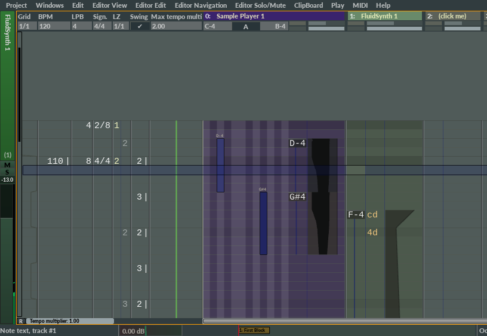

Editor

See Note text or Pianoroll for instructions on how to edit notes to the editor.
- The editor consists of tempo tracks and note tracks. In the lower left area, there is a slider to change tempo in realtime, and a track scrollbar.
- Press F12 to assign an instrument to the current track.
- Press Right Shift to play current block.
- Hold Shift to prevent editor from scrolling down when editing text.
- Press Backspace to scroll up the content of the current sub track one line.
- Press Left Alt + Backspace to scroll down the content of the current sub track one line.
Text sub tracks
- Pressing A inserts 10, B inserts 11, C inserts 12, D inserts 13, E inserts 14, and F inserts 15.
- Press G to add max value.
- Press T to switch glide.
- Hold Shift to prevent cursor from moving down when editing.
Transpose notes and numbers
The U and D keys, in combination with various qualifier keys, can be used to transpose notes up and down. But the same key combinations works on all text tracks :
- Press Left Alt + U to transpose all numbers in the current sub track a little bit up. (Press Shift to transpose more)
- Press Left Alt + D to transpose all numbers in the current sub track a little down. (Press Shift to transpose more)
- Press Right Alt + U to transpose the current number inside the red rectangle a little bit up. (Press Shift to transpose more)
- Press Right Alt + D to transpose the current number inside the red rectangle a little down. (Press Shift to transpose more)
- Press Ctrl + U to transpose all numbers of the current type in the block a little bit up. (Press Shift to transpose more)
- Press Ctrl + D to transpose all numbers of the current type in the block a little down. (Press Shift to transpose more)
- Press Left Win/Cmd + U to transpose all numbers of the current type in the range a little bit up. (Press Shift to transpose more)
- Press Left Win/Cmd + D to transpose all numbers of the current type in the range a little down. (Press Shift to transpose more)
Note that the editor was from the start in 1999 designed to be a pure step machine. It wasn't designed to support editing while playing because that wasn't the intended workflow of the program. Instead, the player stopped automatically when starting to edit, which is actually a very efficient way to work. However, after numerous requests, editing while playing was eventually possible. But, to avoid having to rewrite almost the whole program, the player was just paused when editing, which caused all playing notes to stop permanently. However, more and more functions have later been rewritten in such a way that the player does not have to pause while editing. There's still many functions left where the player is paused while editing though and that's the reason playing notes sometimes are silenced while editing. Hopefully, all these situations will be removed in the future. This is not the case for the sequencer though. The sequencer was built from the ground up to support editing while playing.